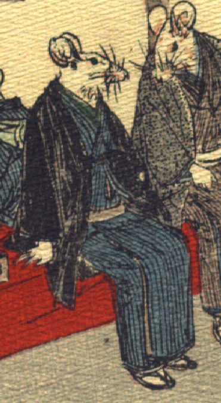

男の鼠。青色の着物に黒い羽織をまとい、草履をはいている。赤布で覆われた縁台に腰掛けている。隣りの鼠と話しているようである。手足は人間のものである。
著作者：J.Dautremer／出典：親書誌：U426_nichibunken_0111：Le mariage de la souris／日付：2006／資源識別子：U426_nichibunken_0111_0003_0001
Copyright (c)2010- International Research Center for Japanese Studies, Kyoto, Japan. All rights reserved.